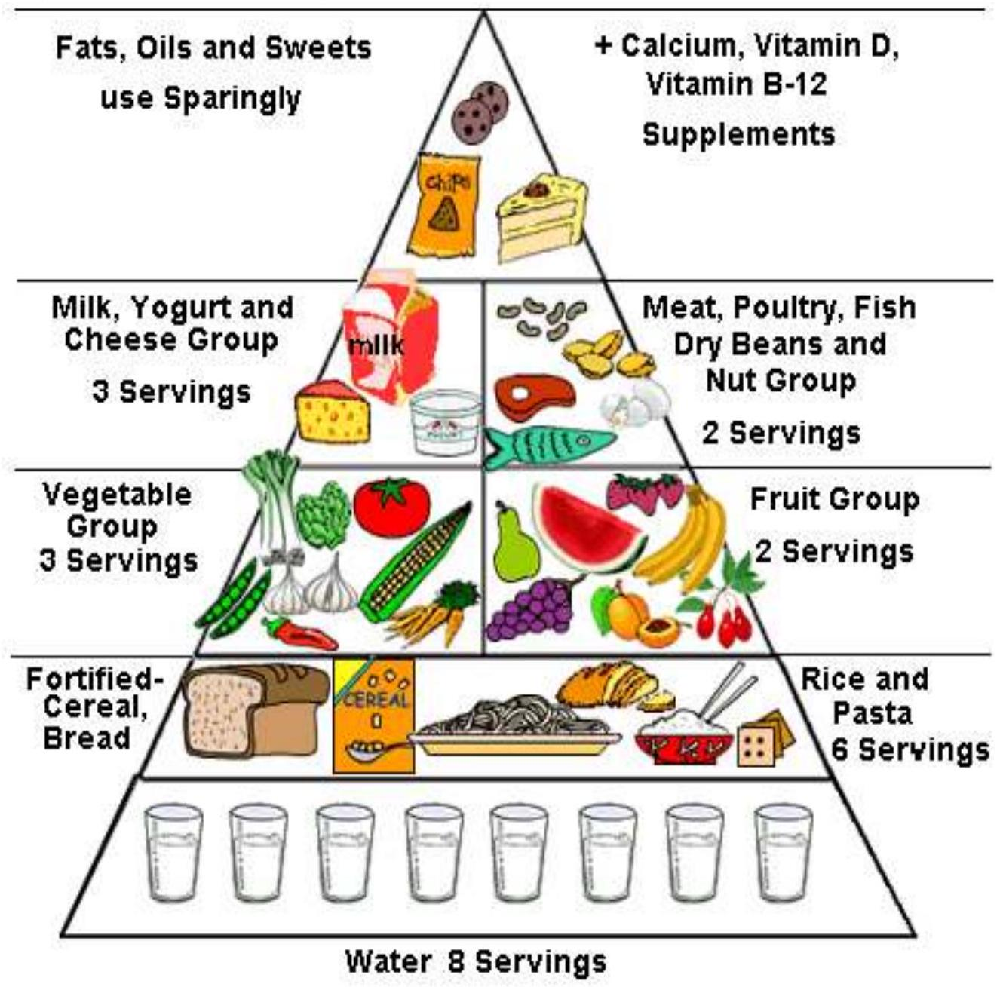

Part 1: Introduction, Definitions, and Energy Concepts
HUMAN NUTRITION
(DIPLOMA IN KENYA REGISTERED COMMUNITY HEALTH NURSING )
Course outline
- Definitions
- Historical background
- Purpose
- Classification of nutrients and their clinical importance (carbohydrates,proteins,vitamins,fats,water,fibre and roughage)
- Factors influencing nutrition .
- Factors affecting food availability (planning,budgeting,purchasing,preparation,storage and protection)
- Foods and Therapeutic diets
- Nutritional disorders and their management(diabetes,hypertension..)
- Child feeding and nutrition(breast feeding and weaning/complementary feeding)
- Nutrition in special groups
- Assessment of nutritional status in the community
Learning objectives
- Describe basic nutrition concepts
- Classify foods.
- Describe nutritional deficiencies and their management.
- Explain the factors that influence availability of foods
- Describe various therapeutic diets and their indications.
- Factors influencing nutritional status in a community.
- Demonstrate ability to share health messages with clients who have nutritional needs.
- Describe nutrition surveys.
INTRODUCTION TO NUTRITION ,DEFINITIONS AND ITS ROLE IN GOOD HEALTH
- Nutrition is the study of what food we eat and what it does to our body.Good nutrition is achieved by eating the right amounts of foods.
- Food must pass through various processes before it is converted into a form which is suitable for use by the cells in the body.
- Nutritional stages are ingestion, digestion, absorption, transport, assimilation, and excretion. It can also be defined as a nourishing substance, such as nutritional solutions delivered to hospitalized patients via an IV or IG tube.Good nutrition is an adequate, well balanced diet combined with regular physical activity.
- It is a cornerstone of good health.
- Poor nutrition can lead to reduced immunity, increased susceptibility to disease, impaired physical and mental development, and reduced productivity.
- As nutritional health diminishes nutrient stores in the body are depleted first as stores are exhausted biochemical reactions in the body eventually slowdown finally clinical evidence (signs and symptoms)develop.
- The science of nutrition is concerned with food production and distribution ,food classes ,food values ,some psychology, sociology and a certain amount of anatomy and physiology.
Definitions
Nutrition-is the sum total of the processes involved in the taking in and utilization of food substances by which growth preparation and maintenance of the body are accomplished.It involves ingestion,digestion ,absorption and assimilation.
Nutrients-this are compounds in foods that are needed by human body for energy, for growth of tissues ,tissues,repair,and maintenance of body tissues,support body's immune functioning all that work towards a healthy living .
Are substance required by the body to preform its basic preforms.
Food-is any nourishing substance that is eaten ,drunk or otherwise taken into the body to sustain life provide energy and promote growth.
Balanced diet-a diet that provides the correct amounts of nutrients for the needs of an individual.
Malnutrition-incorrect or unbalanced intake of nutrients ,may be insufficient or in excess amounts.
Malnutrition is a term encompasing undernutrition(wasting,stunting, underweight, and deficiencies of deficiencies) and over nutrition(overweight and obesity).
Macronutrients-are essential nutrients required in relatively large amounts such as carbohydrates,fats,proteins.
Micronutrients-are substances required in relatively small amounts such as vitamins and minerals for growth and metabolism of living organisms.
Community nutrition-refers to social ,economic ,cultural,and psychological implication of food and eating.
Human nutrition-is the study of food in relationto health of individuals and groups of people particularly the infants ,adoloscents,pregnant and lactacting mothers (vulnerable group) and functioning of the body organs and provide the energy the body requires.
Food bioavailability -this is reduced or increased affect due to interaction of foods eg when spinach is mixed with meat in anaemic patients it works excellent,this is because spinach produces oxalic acids which binds to iron thus increase iron absorption .
Acute malnutrition(wasting)-this is the result of recent rapid weight loss or failure to gain weight and is associated with an increase with an increase risk of mortality.it can moderate of severe.
Chronic malnutrition (stunting)-is the result of inadequate nutrition over a much longer period of time and is associated with an increased risk of disease and eventual death.
Underweight-is the outcome of wasting or stunting or a combination of both and is associated with poor growth and development.
Nutritional status -is a condition in the body resulting from intake absorption and use of food Junk food-this are less important foods
Faddism-false information in a community done as a fashion
Importance of good nutrition
- For physical and mental development for children and adolescents
- For healthy pregnancy and deliveries
- For resistance of infections and diseases
- Provision of energy for working well
- To prevent deficiencies eg kwashiokor ,marasmus
Characteristics of a healthy individual
- Generally well built phsically with right weight ,height for their age but hereditary traits plays a role
- Mentally alert
- Good natured
- Energtic
- Good eyesight
- Clear skin
- Good appetite
- Head plenty of hair
MALNUTRITION
Def: "Bad" nutrition.
- Malnutrition is an abnormal physiological condition that results from deficiencies, excesses or imbalances in the consumption of macro and or micronutrients.
- It can be due to under-nutrition or over-nutrition.
- Under-nutrition is common in developing countries.
Means eating too little food or not enough healthy foods.
Under-nutrition affects mostly children and pregnant women or lactating women.
Under-nutrition is particularly bad for children because it affects their mental and physical growth and development.
It is also a major cause of death in children.
- Over-nutrition or eating too much of certain foods (fats, sugars and refined carbohydrates) causes obesity and some degenerative diseases.
BASIC NUTRITION
Foods can be classified into three main groups based on their nutritional function in the body:
- Energy foods (Carbohydrates)
- Body building foods (Proteins)
- Protective foods (Vitamins)
Each group (except water) contains a large number of different nutrients with a similar but not identical, chemical structure.
BALANCED DIET
The term "balanced diet" refers to a diet that has all nutrients required by the body in the right amounts i.e. carbohydrates, proteins, vitamins, minerals, fats, and water.
Figure illustrating
ENERGY REQUIREMENTS
- Energy is defined as the capacity to do work. In nutrition, this refers to the way the body makes use of energy within the food. The ultimate source of energy in living organisms is the sun through the processes of photosynthesis. Energy for the body comes from the food we eat. In the absence of food, energy is produced from the breakdown of body tissues.
- Energy is required by the body for movement and to do work. Energy is also required continuously by the body even when we are asleep for metabolism and to keep the heart and other organs functioning. Foods that provide energy are carbohydrates, lipids (fats and oils). When energy foods are eaten, they are burned or broken down providing energy and releasing carbon dioxide. Our body requires energy to make body cells.
- Energy is needed for vital functions like heart beat and respiration, growth, repair and maintenance of body tissues, and for maintenance of body temperature.
- Energy needs above the normal requirements are needed for:
- Pregnant women need energy to give to the growing baby
- Lactating mother needs energy to produce milk
- Children require energy to grow, run, play, and walk
- Adults need energy to work. Everybody needs energy for metabolism.
- Energy is measured in joules and previously it was measured in calories. There are 4.184 joules equivalent to one calorie.
- Large people, growing children, pregnant and lactating women, sick people, those doing heavy work and those living in cold places need more energy than smaller, less active people.
- The burning of food to supply energy is called metabolism.
Energy is measured in units called Calories (Ca) or Joules.
1 Ca = 4.12kilojoules
PURPOSE OF ENERGY IN THE HUMAN BODY
- Energy is needed in the human body for the following purposes:
- Required for normal body functions such as the brains, nervous system and breathing
- Maintenance of body temperature
- Continuous action of the heart, lungs and other organs
- Breakdown, repair and building of tissues (metabolic processes)